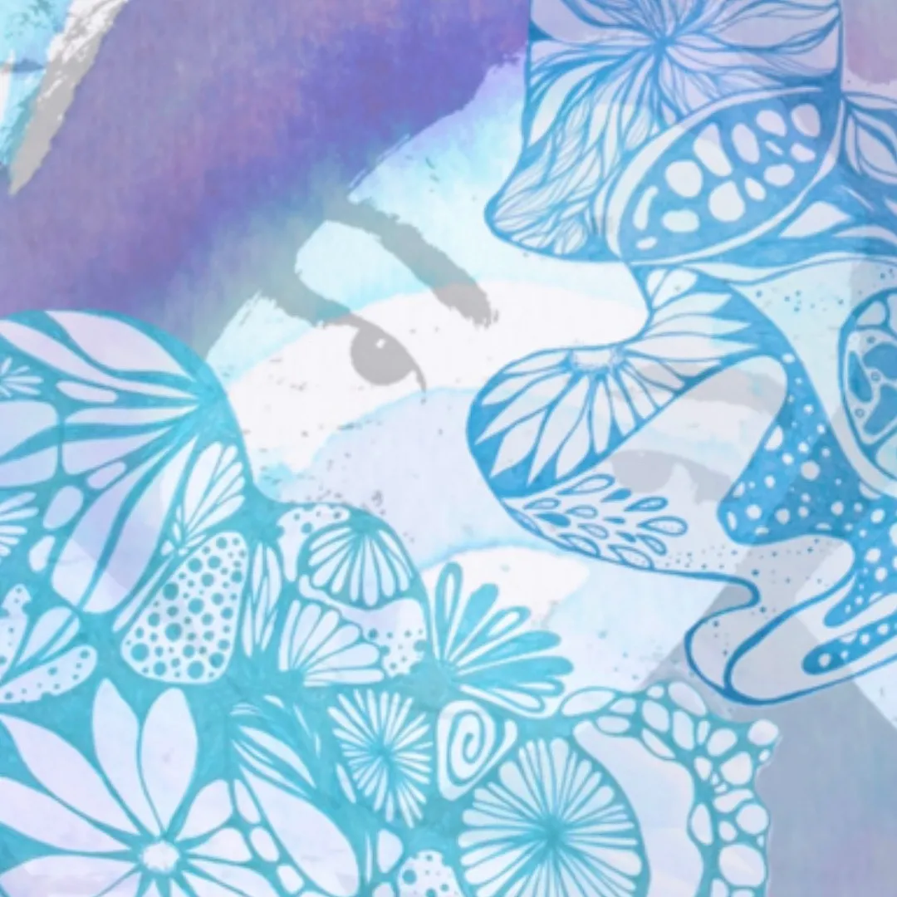

- ポジティブ
- 好奇心旺盛
- なんでも偏りなく好き
- 見て覚えるのが得意
- とりあえずやってみる精神
- 競争心が低め
- やりたいことが多すぎる
- ストレスを溜め込む
- 好みがまばら
- なにか取り込み中の時は聞こえてない
ケモシャグッズを作る。
デザイン専用のインスタアカウントのコンセプトを決めておしゃれにする。
ポートフォリオサイトに新しいギャラリーページを作る。
- 音楽
-
K-POP・・・BLACK PINK、LE SSERAFIM、XG、IVE、New Jeans、ITZY、Stray kids、TREASERE、etc...
邦楽・・・YOASOBI、imase、和ぬか、meiyo、yama、あいみょん、星野源、etc... - 食べ物
-
お肉・・・牛/豚タン、牛ハラミ、鶏むね肉、砂ぎも、モツ、ハツ、etc...
海鮮・・・いくら、中とろ、赤貝、ほたて、甘エビ、赤エビ、クラゲ、etc...
野菜・・・ブロッコリー、プチトマト、レタス、枝豆、 果物・・・アボカド、桃、シャインマスカット、ブルーベリー、苺、清見オレンジ、サクランボ、etc... スイーツ・・・チーズケーキ全般、リンドール(Lindtはスイスのチョコです!!)、麩菓子、ロイズのマシュマロホワイトチョコ、etc... - 飲み物
- コーヒーラテ、カプチーノ、ティーラテ、チャイ、コーン茶、マテ茶、ラッシー、etc...
- お酒
- ハイボール、梅酒、ラドラー(ドイツのフレーバービール)、黒ビール
- 洋服
- HELLO.SANFRANCISCO、ZARA、H&M、Calvin Klein、ユニクロ、WEGO、etc...
4歳からクラシックバレエを始める。
2012年〜2014年
JJB（日本ジュニアバレエ）
2014年
TanzAkademie Zürich（スイス国立チューリッヒダンスアカデミー）スカラシップを獲得。
Akademie des Tanzes（ドイツ マンハイムバレエアカデミー）入学許可を得る。
Palucca Hochschule für Tanz Dresden（ドイツ ドレスデン・パルッカ・ダンス大学）入学許可を得る。
2015年〜2018年
TanzAkademie Zürich（スイス国立チューリッヒダンスアカデミー）に入学し、ワガノワメソッドを学ぶ。
バーレッスン、センターレッスン、ポアント、コンテンポラリー、インプロの他、座学ではバレエ史、解剖学、栄養学、音楽などを学び、3年後に卒業。
2018年〜2022年
ThüringenStaats Ballett（ドイツ チューリンゲン州立バレエ団）に入団。
クラシックやネオクラシックの作品から、コンテンポラリー/モダン作品、ミュージカルなどの様々なジャンルの作品に出演。4年間在籍し、2022年に退団。
2023年〜
大人バレエアカデミーにてバレエ講師を努める。
バレエの教授法、解剖学、バイオメカニクス、コーチングを学び、
それらに基づいた「怪我をせずに長く踊るためのバレエ基礎」「舞台で踊るための魅せるバレエ」のレッスンを行う。
【資格】 Bihnentinzer EFZ(Federal Diploma of Dance Vocational Education and raining)

趣味で抽象画を描いて出展したり、ポーリングアートで友達の古いスマホケースを復活させたり、好きなパーツだけを使ってピアスを作ったりしています。
最近はWEBデザインの勉強でなかなか更新が進んでいませんが、時間が作れたら今流行りの重曹アートを試してみたいです。
[aya_art999]インスタグラムアカウント →